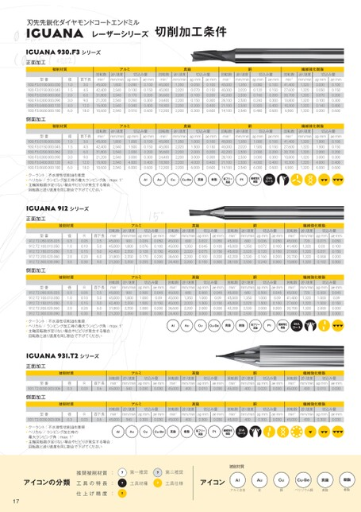

刃先先鋭化ダイヤモンドコートエンドミルレーザーシリーズIGUANA切削加工条件Iguana930.F3シリーズ正面加工被削材質アルミ真鍮型番930.F3.0100.000.030930.F3.0150.000.045930.F3.0200.000.060930.F3.0300.000.090930.F3.0400.000.120930.F3.0600.000.180側面加工被削材質型番930.F3.0100.000.030930.F3.0150.000.045930.F3.0200.000.060930.F3.0300.000.090930.F3.0400.000.120930.F3.0600.000.180径1.01.52.03.04.06.0径1.01.52.03.04.06.0首下長3.04.56.09.012.018.0回転数min-145,00042,40031,80021,20015,90010,600送り速度mm/min1,8002,5402,5402,5402,5402,540切込み量apmm0.0900.1300.1700.2600.3400.510aemm0.1000.1500.2000.3000.4000.600回転数min-145,00045,00036,60024,40018,30012,200送り速度mm/min1,3502,0202,2002,2002,2002,200切込み量apmm0.0500.0700.1000.1500.2000.300aemm0.1000.1500.2000.3000.4000.600回転数min-145,00045,00042,20028,10021,10014,100アルミ真鍮首下長3.04.56.09.012.018.0回転数min-145,00042,40031,80021,20015,90010,600送り速度mm/min1,8002,5402,5402,5402,5402,540切込み量apmm1.0001.5002.0003.0004.0006.000aemm0.1000.1500.2000.3000.4000.600回転数min-145,00045,00036,60024,40018,30012,200送り速度mm/min1,3502,0202,2002,2002,2002,200切込み量apmm1.0001.5002.0003.0004.0006.000aemm0.1000.1500.2000.3000.4000.600回転数min-145,00045,00042,20028,10021,10014,100銅送り速度mm/min1,3502,0202,5302,5302,5302,540銅送り速度mm/min1,3502,0202,5302,5302,5302,540切込み量apmm0.0800.1200.1600.2400.3200.480aemm0.1000.1500.2000.3000.4000.600回転数min-141,40027,60020,70013,80010,3006,900繊維強化樹脂送り速度mm/min1,3201,3201,3201,3201,3201,320切込み量apmm0.0300.0500.0700.1000.1400.200aemm0.1000.1500.2000.3000.4000.600切込み量apmm1.0001.5002.0003.0004.0006.000aemm0.1000.1500.2000.3000.4000.600回転数min-141,40027,60020,70013,80010,3006,900繊維強化樹脂送り速度mm/min1,3201,3201,3201,3201,3201,320切込み量apmm1.0001.5002.0003.0004.0006.000aemm0.1000.1500.2000.3000.4000.600クーラント:不水溶性切削油を推奨ヘリカル/ランピング加工時の最大ランピング角:max1°主軸回転数が足りない場合やビビりが発生する場合:回転数と送り速度を同じ割合で下げてくださいIguana912シリーズ正面加工AlAuCuCu-Be真鍮樹脂鉛フリー真鍮Pt繊維強化樹脂DIAコート被削材質アルミ真鍮型番912.T2.050.005.025912.T2.100.010.050912.T2.150.015.050912.T2.200.020.060912.T2.300.030.090側面加工径0.51.01.52.03.0被削材質型番912.T2.050.005.025912.T2.100.010.050912.T2.150.015.050912.T2.200.020.060912.T2.300.030.090径0.51.01.52.03.0R0.050.100.150.200.30R0.050.100.150.200.30回転数min-145,00045,00042,40031,80021,200送り速度mm/min9001,8002,5502,5502,550切込み量apmm0.0390.0760.1280.1700.255aemm0.0500.1000.1500.2000.300回転数min-145,00045,00045,00036,60024,400送り速度mm/min6801,3502,0202,2002,200切込み量apmm0.0220.0450.0750.1000.150aemm0.0500.1000.1500.2000.300回転数min-145,00045,00045,00042,20028,100首下長2.55.05.06.09.0アルミ真鍮回転数min-145,00045,00042,40031,80021,200送り速度mm/min9001,8002,5502,5502,550切込み量apmm0.5001.0001.5002.0003.000aemm0.0450.090.1500.2000.300回転数min-145,00045,00045,00036,60024,400送り速度mm/min6801,3502,0202,2002,200切込み量apmm0.5001.0001.5002.0003.000aemm0.0450.090.1500.2000.300回転数min-145,00045,00045,00042,20028,100首下長2.55.05.06.09.0銅送り速度mm/min6801,3502,0202,5302,530銅送り速度mm/min6801,3502,0202,5302,530繊維強化樹脂切込み量apmm0.0360.0720.1200.1600.240aemm0.0500.1000.1500.2000.300回転数min-145,00041,40027,60020,70013,800送り速度mm/min7201,3201,3201,3201,320切込み量apmm0.0150.030.0510.0680.102aemm0.0500.1000.1500.2000.300繊維強化樹脂切込み量apmm0.5001.0001.5002.0003.000aemm0.0450.090.1500.2000.300回転数min-145,00041,40027,60020,70013,800送り速度mm/min7201,3201,3201,3201,320切込み量apmm0.5001.0001.5002.0003.000aemm0.0450.090.1500.2000.300クーラント:不水溶性切削油を推奨ヘリカル/ランピング加工時の最大ランピング角:max1°主軸回転数が足りない場合やビビりが発生する場合:回転数と送り速度を同じ割合で下げてくださいAlAuCuCu-Be真鍮樹脂鉛フリー真鍮Pt繊維強化樹脂DIAコートIguana931.T2シリーズ正面加工被削材質型番931.T2.0030.003.006径0.3R0.03首下長0.6側面加工被削材質型番931.T2.0030.003.006径0.3R0.03首下長0.6アルミ真鍮銅繊維強化樹脂回転数min-145,000送り速度mm/min540切込み量apmm0.030aemm0.030回転数min-145,000送り速度mm/min400切込み量apmm0.010aemm0.030回転数min-145,000送り速度mm/min400切込み量apmm0.020aemm0.030回転数min-145,000送り速度mm/min430切込み量apmm0.010aemm0.030アルミ真鍮銅繊維強化樹脂回転数min-145,000送り速度mm/min540切込み量apmm0.300aemm0.030回転数min-145,000送り速度mm/min400切込み量apmm0.300aemm0.030回転数min-145,000送り速度mm/min400切込み量apmm0.300aemm0.030回転数min-145,000送り速度mm/min430切込み量apmm0.300aemm0.030クーラント:不水溶性切削油を推奨ヘリカル/ランピング加工時の最大ランピング角:max1°主軸回転数が足りない場合やビビりが発生する場合:回転数と送り速度を同じ割合で下げてくださいAlAuCuCu-Be真鍮樹脂鉛フリー真鍮Pt繊維強化樹脂DIAコートアイコンの分類推奨被削材質工具の特長仕上げ精度:::???第一推奨工具材種??第二推奨工具仕様17被削材質アイコンAlアルミ合金Au金Cu銅Cu-Be真鍮ベリリウム銅真鍮樹脂樹脂
